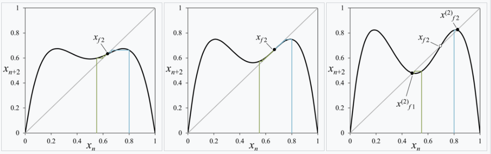
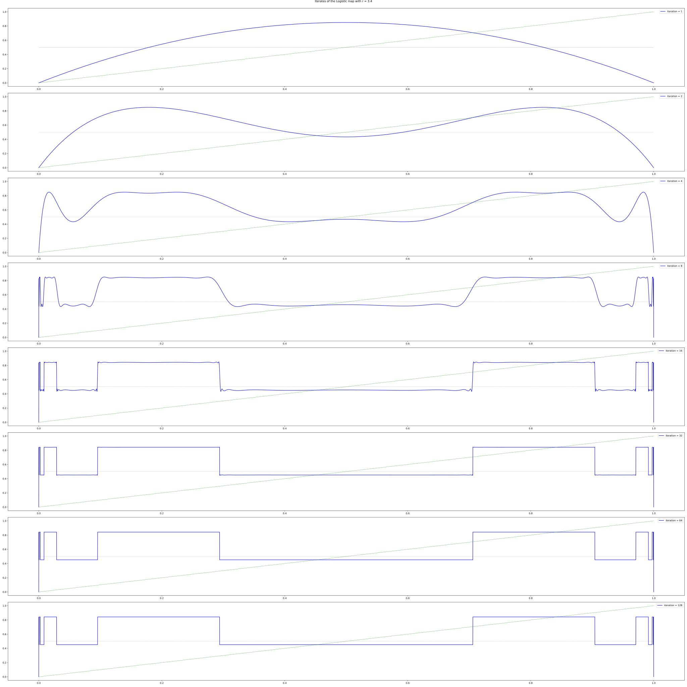
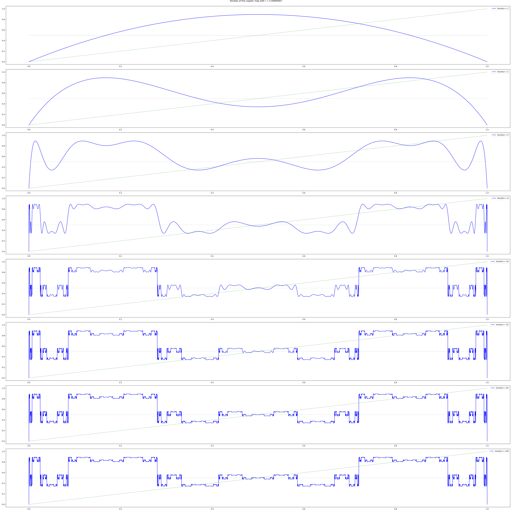
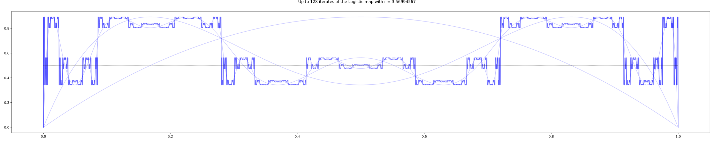
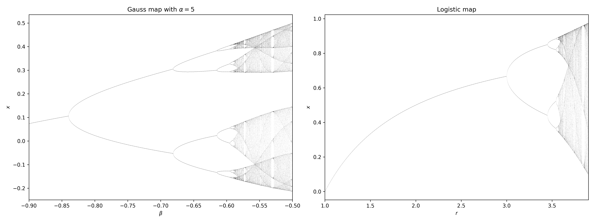
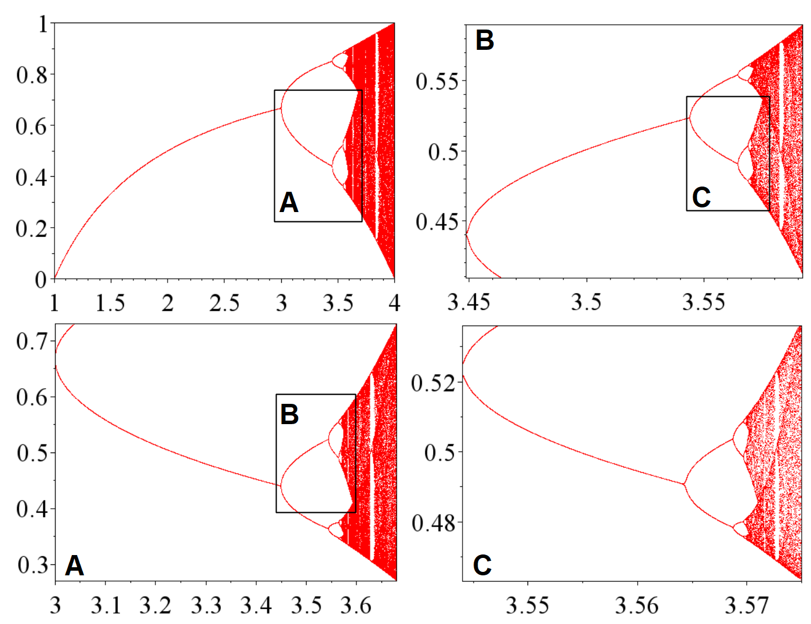
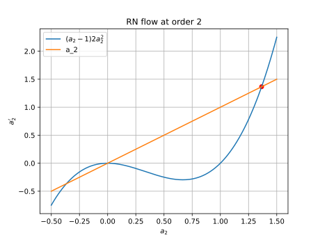
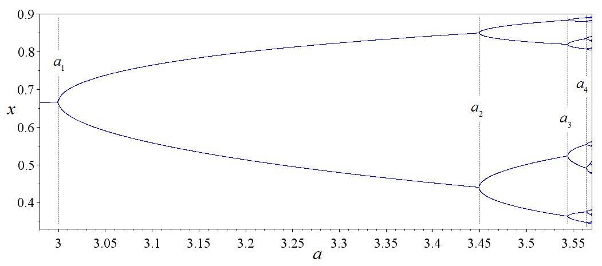

What is renormalization?
Renormalization is not group theory. The name “renormalization group theory” is truly terrible. To an applied physicist, the name “group theory” is abstract and inspires fear and uncertainty. To a mathematician, the name “group theory” is plain wrong, because you can always undo a group-action, but you can never undo a coarse-graining.
The logistic map: RN on \(\mathbb{R}\)
This section based on Wikipedia.
The logistic map
Consider a function \(f_r(x)=r x(1-x)\), and we want to study what happens when we iterate the map many times. The map might fall into a fixed point, a fixed cycle, or chaos. We can see all those cases in its bifurcation diagram.

When the map falls into a stable fixed cycle of length \(n\), we would find that the graph of \(f_r^n\) and the graph of \(x \mapsto x\) intersect at \(n\) points, and the slope of the graph of \(f_r^n\) is bounded in \((-1, +1)\) at those intersections.
For example, when \(r=3.0\), we find that there is only a single intersection, at which point the slope is exactly \(+1\), indicating that it is a stable single fixed point, but is about to undergo a bifurcation.

As \(r\) increases to beyond \(r=3.0\), the intersection point splits to two, which is a period doubling. For example, when \(r=3.4\), there are three intersection points, with the middle one unstable, and the two others stable.

As \(r\) approaches \(r=3.45\), another period-doubling occurs in the same way. The period-doublings occur more and more frequently, until at a certain \(r \approx 3.56994567\), the period doublings become infinite, and the map becomes chaotic. This is the period-doubling route to chaos.

Something remarkable happens when we superimpose the graphs of \(f_r, f_r^2, f_r^4, \dots\) when \(r\) is at the critical point \(3.5699\dots\). We see that each iteration of the graph seems to resemble itself, except that it is scaled and rotated by 180 degrees. We can naturally guess that \(f_r^\infty\) converges to a certain function that is infinitely jagged, such that it exactly resembles itself if scaled and rotated, that is, it is a fractal.

As \(r\) approaches the critical value, we can see how the graph of \(f_r^\infty\) takes on more and more details, and at the critical point, becomes a perfect fractal.
Universality
Looking at the bifurcation diagram, we can see a region, starting just after \(r = 3.8\), where there is a clear “window” with period \(3\) bursting out of a sea of chaos. The window then bifurcates repeatedly, to stable cycles of periods \(6, 12, 24, \dots\) until it all collapses back into the chaos again at around \(r \approx 3.8494344\). Though this is a different place, the bifurcation diagram looks suspiciously similar to the previous case.
Not only that, if we look at the movie of \(f_r^\infty\) as \(r\) approaches this critical point, we again see the same jagged shape.
Are we seeing some kind of universal feature of period-doubling routes to chaos? Is this a general pattern independent of the details of how exactly the logistic map is defined? What if we change to another dynamical system completely different?
For example, we can consider the gauss map \(x_{n+1} = \exp(-\alpha x^2_n)+\beta\). For fixed \(\alpha\), we can plot the bifurcation graph as we vary \(\beta\). Though it looks different, the two bifurcation graphs have a clear resemblance. This is an instance of universality, for which we will see again and again later. If \(f_r\) is a family of curves with parabolic tops1, then it will bifurcate just like the logistic curve.
1 Rigorously, we can describe it as follows. If \(F: \mathbb{R}^2 \to \mathbb{R}\) is smooth, and for all \(r \in \mathbb{R}\), the function \(F(r, \cdot): \mathbb{R}\to \mathbb{R}\) has a single global maximum, at which point \(\partial_x^2 F(r, x) < 0\), then its bifurcation diagram looks the same as that of the logistic map, and it will have the same two scaling exponents \(\alpha, \delta\), to be calculated below.

More to the issue at hand: Why do the two graphs look similar?

The self-similarity equation
Recall how we said that the limit of \(f^\infty_r\) should be self-similar, in the sense that if we iterate it twice, then rotate and scale it by a factor, we get back the same function. That is, it should be a solution to the self-similarity equation
\[ f(x) = -\alpha f\left(f\left(\frac{x}{-\alpha} \right)\right) \]
In words, if we scale up the graph for \(f^2\) by \(\alpha > 0\), then rotate by 180 degrees, we get back the graph for \(f\).
By eye-balling the curve, we see that \(f\) should be an even function. Also, since the \(f^2\) can be graphically calculated by doing the cobweb diagram with the graph of \(f\), it does not matter if we first scale up the graph of \(f\) by a factor of \(r\) to \(F\), then double it to \(F^2\), or if we first double it to \(f^2\), then scale its graph. We would get back the same thing. Thus, wolog, we can scale \(f\) such that \(f(0) = 1\).
So, our task is to solve the following equation:
\[ \begin{cases} f(x) = -\alpha f\left(f\left(\frac{x}{-\alpha} \right)\right)\\ f(x) = 1 - a_2 x^2 + a_4 x^4 + \dots \end{cases} \]
We can solve the equation numerically as the fixed point. We would start with \(f(x) = 1-x^2\), then guess a good \(\alpha\) and repeatedly apply \(f \mapsto -\alpha f\left(f\left(\frac{x}{-\alpha} \right)\right)\). If we picked \(\alpha\) correctly, we would have gotten the right result, as shown:

If \(\alpha\) is not correct, then the iterates would not converge, but would have a zooming effect that looks cool.
At order 2, we approximate by \(f(x) \approx 1 - a_2 x^2\), and ignore all higher-order terms. This gives us two equations for two unknowns:
\[ \begin{cases} 1-a_2 = \frac{1}{-\alpha} \\ \frac{2a_2^2}{\alpha} = a_2 \end{cases} \]
It has two solutions. One solution has \(\alpha < 0\), which we know is unphysical. The other one is
\[ \begin{cases} \alpha = 1 + \sqrt{3} \approx 2.732 \\ a_2 = \frac{1 + \sqrt{3}}{2} \approx 1.366 \end{cases} \]
What happens if we are not exactly at the fixed point, but starts slightly off? Let’s say we start with a function \(f_0(x) = 1 - a_{2,0}x^2\), where \(a_{2,0} = a_2^* + \Delta\), where \(a_2^*\) is the fixed point, and \(\Delta\) is small but nonzero. Here we should think of the space of possible functions. Each point in this space is a possible scaling limit, but start a bit too small and we fall into boredom, start a bit too high and we fall into chaos. Start just right, and we harvest a beautiful fractal.
After one iteration, we have \(f_1(x) = -\alpha_0 f_0(f_0(x/(-\alpha_0)))\), where \(\alpha_0\) was fixed by \(f_1(0) = 1\). This gives us
\[ \begin{cases} \alpha_0 = \frac{1}{-1+a_{2, 0}} \\ \frac{2a_{2, 0}^2}{\alpha_0} = a_{2, 1} \end{cases} \]
That is, we have the renormalization flow equation
\[ 2a_{2, 0}^2(a_{2, 0}-1)= a_{2, 1} \]
We can plot the space of all possible \(f(x)\) as a line, like
\[1-0x^2, 1-0.5 x^2, 1-x^2, 1-1.5x^2, \dots\]

This is a 1-dimensional slice of the space of all possible \(f\) (the space of theories). Then, the effect of repeatedly applying the self-similarity map is to iterate the map \(a_2 \mapsto 2a_{2}^2(a_{2}-1)\). If we are precisely at the fixed-point \(a_2^*\), then we are not going anywhere, but if we are not exactly there, then since the slope of \(a_2 \mapsto 2a_{2}^2(a_{2}-1)\) is \(\delta \approx 5.73\) at that point, we would get farther and farther away:
\[ f_0 = 1-(a_2^* + \Delta)x^2, \quad f_1 = 1-(a_2^* + \delta\Delta)x^2, \quad f_1 = 1-(a_2^* + \delta^2\Delta)x^2, \quad \dots \]
and after \(\log_\delta(\frac{0.1}{\Delta})\), we would be at roughly \(1-(a_2^* \pm 0.1)x^2\), which is when we can finally notice that we are obviously no longer in the neighborhood of the fixed point anymore. If we start at \(a_2^* + \Delta/\delta\), then we can sustain the illusion for one more iteration. Similarly, if we start at \(a_2^* + \Delta/\delta^n\), then we can sustain the illusion for \(n\) more iterations.
Now, thinking back to what the logistic map says, we understand what we have discovered: The graph of \(f_{r^* - \Delta}\) is similar to the graph of \(f_{r^* - \Delta/\delta}^2\) scaled by \(-\alpha\). If we let \(r_1, r_2, r_3, \dots\) be the points at which the logistic map splits into a stable cycle of period \(2^1, 2^2, 2^3, \dots\), then we have \(r_{n} \approx r^* - \Delta/\delta^{n}\), and so we have:
\[ \frac{r^* - r_n}{r^* - r_{n+1}} \to \delta \]
This is usually spoken in this way: the intervals between two bifurcations shrinks at a rate of \(\delta\).

\(\delta\) is called Feigenbaum’s first constant, and \(\alpha\) is Feigenbaum’s second constant.
Similarly, we can solve the equation at order 4 by plugging in \(f(x) \approx 1 - a_2 x^2 + a_4 x^4\), obtaining 3 equations for 3 variables:
\[ \begin{cases} 1-a_2+a_4 = \frac{1}{-\alpha} \\ \frac{2a_2^2 - 4a_2a_4}{\alpha} = a_2 \\ \frac{a_4(4a_4+6a_2^2) - a_2(2a_4 + a_2^2)}{-\alpha^2} = a_4 \end{cases} \]
To solve this numerically, first guess a solution from the previous one, \(\alpha \approx 2.732, a_2 \approx 1.366\), then plug into the first equation to get \(a_4 \approx 0\). Then, standard numerical root-finding gives
\[ \begin{cases} \alpha \approx 2.534 \\ a_2 \approx 1.522 \\ a_4 \approx 0.128 \end{cases} \]
We can also make the same argument using a flow in theory-space, except now we are doing it over a 2-dimensional slice of it. The flow map is
\[ F(a_2, a_4) = \left( (2a_2^2 - 4a_2a_4)(-1+a_2 - a_4), -(a_4(4a_4+6a_2^2) - a_2(2a_4 + a_2^2))(-1+a_2 - a_4)^3 \right) \]
At the fixed-point \((a_2, a_4) = (1.522, 0.128)\), the Jacobian matrix is \[ \nabla F = \begin{bmatrix} 6.0506 & -6.2524 \\ 1.2621 & -1.6909 \end{bmatrix} \]
This matrix has eigenvalues of \(4.843, -0.483\), so it is a saddle point, with \(\delta = 4.843\). The flow and the eigenvectors \((0.982, 0.190), (0.691, 0.723)\) are plotted below.

In summary:
| Order 2 | 4 | \(\infty\) | |
|---|---|---|---|
| \(a_2\) | 1.366 | 1.522 | 1.530 |
| \(a_4\) | 0.128 | 0.105 | |
| \(\alpha\) | 2.732 | 2.534 | 2.503 |
| \(\delta\) | 5.73 | 4.843 | 4.669 |
Lessons
Even in this tiny problem, we can already draw several lessons, which will appear again and again in RN:
- We assume a function is self-similar, and calculate from there.
- Self-similarity is a transform on a function (or “theory”).
- We often need to use a “fudge factor” like \(\alpha\) to make sure that the transformed function does not collapse to zero, for trivial reasons.
- If we repeatedly apply the self-similarity transform on a function, we would obtain a scaling limit, a perfectly self-similar object – a fractal.
- In the space of all possible theories, the self-similarity transform creates a flow-field in the theory space. The interesting fixed-points of the flow-field are its saddle points.
- The largest eigenvalue of the saddle point describes what happens when you are close to the saddle point, but not quite there.
- Bravely calculate using the cheapest approximation you can think of. It often gets you within 50% of the right answer.
- But if you want accuracy, you can always use a computer and calculate many orders higher.
Ising model and friends: RN on a grid
This section studies RN on a grid, using what is called real space RN, in contrast to momentum space RN. Real space RN is a garden of tricks, useful and intuitive, but not as powerful as momentum space RN. If you find the kind of mathematical trickery in this section fun, look at (Burkhardt and Leeuwen 1982) for more.
This paper attracted much favorable notice since, beyond obtaining all the scaling properties, it seemed to lay out a direct route to the actual calculation of critical properties. On closer examination, however, the implied program seemed – as I will explain briefly – to run rapidly into insuperable difficulties and interest faded. In retrospect, however, Kadanoff’s scaling picture embodied important features eventually seen to be basic to Wilson’s conception of the full renormalization group.
The Ising model
Ferromagnets are weird. A single iron atom is a tiny magnet, but if the iron atoms in a piece of magnet are not oriented roughly in the same way, then the whole piece would have all its direction washed away, thus not be a magnet at all. In the atomic world, things jiggle about and tend to destroy all order, so how is it possible for a grid of atoms to stay pointing mostly in the same direction for days and weeks – an eternity on the atomic level?
In 1920s, Lenz had the idea of a simple atomic model for ferromagnetism. He gave the problem to his graduate student Ising, who solved it in the one-dimensional case. He was disappointed to see that there is no spontaneous magnetization, which is the key feature of ferromagnetism, and he conjectured that this is also true in higher dimensions. The model was thus neglected for a while, until (Peierls 1936) showed that the two-dimensional Ising model does exhibit a phase transition, and later, Onsager solved it completely in 1944, showing several curious features. This was a starting point of modern statistical physics. See (Domb 1985) for some more historical details.
The Ising model is a toy model of a magnet. For simplicity, we assume all the iron atoms are locked in a lattice, and each atom can only be spin up or spin down (like a coin that can be heads or tails). Neighboring atoms want to be the same, but temperature \(T\) makes the atoms jiggle and be random.
There are many different Ising models, but the following is the most standard. We have a grid of atoms, and each atom is nothing but a point with two possible values: \(+1\) or \(-1\). Nothing more complicated than that. The energy of the system is determined by the interaction between nearest neighbors, with a lower energy when neighboring spins are aligned. That is, its energy is
\[ H(s) = -J \sum_{i, j} s_i s_{j} \]
where \(J>0\) is the strength of interaction between neighboring atoms, \(s_i\) represents the spin at site \(i\), and the summation is over neighboring pairs of \(i, j\). For example, if we have Ising model on the integer line \(\mathbb{Z}\), then \(H = -J \sum_{i} s_i s_{i+1}\). Similarly, if we have an Ising model on the square grid \(\mathbb{Z}^2\), then \(H = -J \sum_{i} (s_{i} s_{i+(1, 0)} + s_{i} s_{i+(0, 1)})\).
We are not going to explain why, but in statistical mechanics, we have to calculate the following, slightly mysterious quantity \(Z\), called the partition function. Everything in statistical mechanics bursts forth from this one function. It is no exaggeration to say that the story of statistical mechanics is mostly about calculating \(Z\) at higher and higher precisions using larger and larger computers while losing more and more hair on the head. For the Ising model, \(Z\) is defined as
\[ Z := \sum_{s} e^{-\beta H(s)} \]
where \(\beta = 1/T\) is the inverse of the temperature \(T\). The summation is over all possible configurations of the system. For example, if the Ising model is over \(\{0, 1, 2, \dots, 99\}\), then the summation is over \(\{-1, +1\}^{100}\).
The temperature turns out to be not useful during the RN calculation, so to make the notation cleaner, we absorb it into the \(J\) like this:
\[Z = \sum_{s} e^{-\beta H(s)}, \quad H(s) = -J_0 \sum_{i, j} s_i s_{j}, \quad J_0 = J/T\]
After we finish the calculation, we would write the temperature explicitly again in order to interpret what we have found.
Kadanoff decimation, take 0
Like ancient Roman decimation, the idea of Kadanoff decimation is to pick out some spins for elimination, leaving behind the other spins gathered around the mangled nothings of their former comrades. In the case of the 1D Ising model, decimation is exactly solvable, making it a good first problem to try.
Let us consider the Ising model on the integer line \(\mathbb{Z}\) with periodic boundary conditions. That is, we have \(2n\) spins \(s_0, s_1, \dots, s_{2n-1}\) arranged in a circle. Now, we keep the even spins white and decimate the odd spins. How can we do that? Well, behold:
\[ \begin{aligned} Z &= \sum_{s_0, s_1, \dots, s_{2n-1}} e^{+J(s_0 s_1 + s_1s_2 + \dots + s_{2n-1}s_0)} \\ &= \sum_{s_0, s_1, \dots, s_{2n-2}} \sum_{s_1, s_3, \dots, s_{2n-1}} e^{J(s_0 s_1 + s_1s_2 + \dots + s_{2n-1}s_0)} \\ &\overset{\mathrm{hopefully}}{=} \sum_{s_0, s_2, \dots, s_{2n-2}} e^{J'(s_0 s_2 + s_2 s_4 + \dots + s_{2n-2}s_0)} \\ \end{aligned} \]
where we have hopefully written the \(J'\). It is our ardent hope that there exists some \(J'\), somewhere in the universe, that will make the equation come true.2
2 Physicists call it “ansatz”, but I like to say it like this:
The author of an atrocious undertaking ought to imagine that he has already accomplished it, ought to impose upon himself a future as irrevocable as the past.
– Yu Tsun, professor of English at Deutsch-Chinesische Hochschule.
Because each even spin can only reach its nearest-neighboring even spins via the odd spin between them, the partition function splits cleanly:
\[ Z = \sum_{s_0, s_2, \dots} \left(\sum_{s_1} e^{J(s_0 s_1 + s_1 s_2)}\right) \left(\sum_{s_1} e^{J(s_2 s_3 + s_3 s_4)}\right) \cdots \]
so our wish would be fulfilled if \(\sum_{s_1} e^{J(s_0 s_1 + s_1 s_2)} = e^{J's_0s_2}\) for all 4 possible choices of \(s_0, s_2\). Now, by direct calculation, we see that our task is to solve the following 4 equations simultaneously:
| + | - | |
|---|---|---|
| + | \(e^{J'} = 2 \cosh(2J)\) | \(e^{-J'} = 2\) |
| - | \(e^{-J'} = 2\) | \(e^{J'} = 2 \cosh(2J)\) |
Immediately we see a problem: if both \(e^{J'} = 2 \cosh(2J)\) and \(e^{-J'} = 2\) hold, then \(1 = 4 \cosh(2J)\). This means that we have to use a “fudge factor” again. Does that remind you of the \(\alpha\) back in the logistic map calculation? It should. Add in the fudge factor \(k\) with:
\[ Z = k^{n} \sum_{s_0, s_2, \dots, s_{2n-2}}e^{J'(s_0 s_2 + s_2 s_4 + \dots + s_{2n-2}s_0)}, \quad \sum_{s_1} e^{J(s_0 s_1 + s_1 s_2)} = ke^{J's_0s_2} \]
Now the solution is: \(J' = \frac 12 \ln \cosh(2J), k = 2\sqrt{\cosh(2J)}\). Again, we see that RN flow equation
\[ J \mapsto \frac 12 \ln \cosh(2J) \]
but this time, this RN flow has only a single stable fixed point at \(J = 0\). Not only that, since \(\frac 12 \ln \cosh(2J) \approx J^2\) if \(J\) is small, if we decimate for \(n\) times, we would end up with \(J' \sim J^{2^n}\). What does this mean?
Suppose we start with a magnet with interaction strength \(J\), then after we zoom out for \(n\) times, where \(n\) is large, we would end up with a decimated view of the magnet, where we can only see the atoms at sites \(0, 2^n, 2\times 2^n, 3 \times 2^n, \dots\). Our RN flow calculation states that the strength of interaction between \(s_0\) and \(s_{2^n}\) are just the multiplication of all the bonds between them. This is not so strange if we think about it: on a 1D Ising model, the only way for \(s_0\) to interact with \(s_{2^n}\) is if they laboriously go, bond-by-bond, across all the \(2^n\) bonds, and at each bond, the interaction strength must be degraded. It would be like trying to draw with a pair of chopstick holding a pair of chopsticks holding a pair of chopsticks… holding a paintbrush. You rapidly run out of all bonding strength.
In particular, it shows that no matter how strong \(J\) is, the correlation between distant atoms would decay rapidly, and so there is no ferromagnetism on the 1D Ising model. This is what disappointed Ising so much back in 1925 and what led him to abandon this model of magnetism.
If you are ambitious, you can try doing the same RN analysis for a “ladder” made of two \(\mathbb{Z}\) put side-by-side. If you have “a lot of time” like Onsager, you would be on your way to solving the Ising model in 2 dimensions. I have not worked this out, because I don’t have a lot of time, but it would involve a 4-by-4 matrix. See page 12 for a sketch of solution.
Kadanoff decimation, take 1 (abortive)
Now that we have done it for 1D Ising model, we can attempt it for the 2D model. We will not be able to solve it exactly, but we will see what is going to happen. To start our analysis, we write out the partition function and Hamiltonian energy function:
\[ Z = \sum_s e^{-H}, \quad H = -J \sum_{i, j \text{ are neighbors}} s_i s_j \]
where again we have absorbed temperature into the Hamiltonian. To perform decimation, we paint the square grid like a checkerboard, and eliminate all the black-colored spins.

{kind=link}
{kind=link}
{kind=link}
{kind=link}
{kind=link}
{kind=link}
However, we can see a problem in the picture. Whereas in the original, un-decimated grid, only nearest neighbors are connected by a bond. In the decimated grid, not just the nearest neighbors, but also the next-nearest-neighbors are connected by a double-bond. Not only can you go from \((-1, 0)\) to a nearest-neighbor \((0, +1)\) via the to-be-decimated atom \((0, 0)\), but also go to the next-nearest neighbor \((+1, 0)\). Not only that, the square of 4 spins neighboring \((0, 0)\) are connected via \((0, 0)\), so we also need to account for that interaction. Thus, the renormalized Hamiltonian would have three kinds of terms: nn term, nnn term, and square-interaction term:
\[ -H' = J_{nn} \sum_{i, j \text{ are nn}} s_i s_j + J_{nnn} \sum_{i, j \text{ are nnn}} s_i s_j + J_{\square} \sum_{i, j, k, l \text{ are }\square} s_i s_j s_k s_l \]
Let the grid have \(N\) sites. We can ignore the borders, or roll up the borders like how we did it in the 1D case – it does not matter when \(N\) is large. The partition function of the system is
\[ Z = \sum_{s \in \{-1, +1\}^\text{grid}} \exp\left(J \sum_{ i, j \text{ are nn}} s_i s_j\right) \]
Now, decimate half of the grid, and leave behind the other half. As derived in (Maris and Kadanoff 1978), we have
\[ Z = f(J)^{N/2} \sum_{s \in \{-1, +1\}^\text{decimated grid}} \exp\left(J_{nn} \sum_{ i, j \text{ are nn}} s_i s_j + J_{nn} \sum_{ i, j \text{ are nnn}} s_i s_j + J_{\square} \sum_{ i, j, k, l \text{ are }\square} s_i s_j s_k s_l\right) \]
where \[ \begin{aligned} f(J) &= 2 \cosh ^{1 / 2}(2 J) \cosh ^{1 / 8}(4 J) \\ J_{nn} &= (1 / 4) \ln \cosh (4 J) \\ J_{nnn} &= (1 / 8) \ln \cosh (4 J) \\ J_{\square} &= (1 / 8) \ln \cosh (4 J)-(1 / 2) \ln \cosh (2 J) \end{aligned} \]
Note: Why don’t we have the triangle terms like \(J_\Delta s_{(-1, 0)}s_{(0, +1)}s_{(+1, 0)}\)? Since the system has the same energy if we flip all spins, the Hamiltonian is even, and so the triangle-term must be exactly zero.
Well, that’s fine, you might say, what’s the big deal? The big deal is that, if we were to repeat the decimation again, we will suddenly meet infinitely many interaction terms! How so?
Look at the square grid again. Suppose we have already included the nnn interactions, and we were to do a decimation. As we have seen, in order that the partition function before-and-after decimation are the same, we must construct one interaction term for each possible interaction mediated by a decimated spin. Well, \((-1, 0)\) and \((0, +1)\) are mediated by \((0, 0)\), so they must have an interaction term. No problem, that’s the nn term, written as \(J_{nn}s_{(-1, 0)}s_{(0, +1)}\). Similarly, \((-1, 0)\) and \((0, +1)\) are mediated by \((0, 0)\), so they must have an interaction term. That’s the nnn term, written as \(J_{nnn}s_{(-1, 0)}s_{(0, +1)}\). Do you see it now?
We can connect \((-1, 0)\) and \((3, 0)\) via \((0, 0), (1, -1), (2, 0)\). Not only that, we can connect them by infinitely many possible routes: \((0, 0), (1, -1), (2, 0), (3, -1)\), and \((0, 0), (1, -1), (2, 0), (3, 1)\), and etc… And that’s not even the worst of it. Just like how we have arbitrary pair-wise interactions, we also have arbitrary group-interactions within subsets with arbitrary shapes. It is all a big mess, which goes to show how difficult the Ising problem already is in 2D, let alone in 3D.
We can of course deal with the problem by cutting off the weak interaction terms, like how we did the logistic map example. For example, we can preserve all interaction terms between spins that are at most 6 distances away, then compute the RN flow on the space of all Ising models on the square grid, find a saddle point, and compute the largest eigenvalue of the RN flow near the saddle point. The more terms we account for, the better the approximation is.
These calculations were much more elaborate than the model calculation described here; in my own work, for example, 217 couplings between spins were included. The critical exponents derived from the calculation agree with Onsager’s values to with in about 0.2%.
Migdal bond-moving trick
Before we are finished with the Ising model, here is one more trick: the Migdal bond-moving trick. The idea is shown in the diagram.

We perform the trick in two steps. First, we take the odd-numbered vertical bonds and move them to the even-numbered ones. Next, we decimate the crossed-out spins. Since this trick does not handle the vertical and horizontal bonds equally, we write the bond-strengths separately as \(J_x, J_y\). The RN flow of this step is
\[ (J_x, J_y) \mapsto \left(2 J_x, \frac 12 \ln \cosh(2 J_x)\right) \]
After doing the Migdal bond-moving trick once in the horizontal direction, we can do it again in the vertical direction. The total effect is to have decimated 3/4 of the grid, preserving one spin per 2-by-2 block of spins. The RN flow of the whole process is:
\[ (J_x, J_y) \mapsto (f_1(J_x), f_2(J_y)) \]
where \(f_1(x) = \ln\cosh(2x)\) and \(f_2(x) = \frac 12 \ln\cosh(4x)\). This RN flow has saddle point \((0.609, 0.305)\). If we apply the same RN, but in the other order (first horizontal, then vertical), we have instead \((J_x, J_y) \mapsto (f_2(J_x), f_1(J_y))\), with saddle point \((0.305, 0.609)\). Well, the true saddle point of the whole system should have equal \(J_x, J_y\), since the true system does not discriminate the horizontal and vertical, so the cheap answer is to take their average: \((0.609 + 0.305)/2 = 0.457\).
According to Onsager’s exact solution, the true critical point is \(J_c = \frac{\ln(1+\sqrt 2)}{2} = 0.4407\). So by this simple trick, we have already gotten within 3.7% of the true answer.
A small improvement is to find the “double fixed point”. That is, we consider applying the first RN flow, then the second, and calculate the fixed point of this compound RN flow. That is, we expect the real fixed point to be the simultaneous solution to
\[x = f_1(f_2(x)); \quad x = f_2(f_1(x))\]
Now, these have different solutions, so we do the obvious thing and take their midpoint. This gives \(0.4417\). And with that simple idea, I got within 0.23% of the true answer.


Side note: Onsager’s solution of Ising model in 2D
So far, we have been doing it for the Ising model on \(\mathbb{Z}\). But it’s clear that we can also do it for two \(\mathbb{Z}\) put side-by-side like a ladder. Each “rung” of the ladder can be thought of as one big atom, with 4 possible states: up-up, up-down, down-up, down-down. We can then do the same calculation as the previous case, except that instead of a \(2\times 2\) matrix, we have a \(4 \times 4\) matrix.
For that matter, we can do it for any finite number of those \(\mathbb{Z}\) put together. We can then imagine doing that for such ladders with widths \(2, 3, 4, 5, 6, \dots\), then discover a pattern, and take the limit. If this works, we would solve the Ising model on \(\mathbb{Z}^2\).
Arduous as it sounds, this is exactly how Lars Onsager arrived at his solution of the Ising model in \(\mathbb{Z}^2\). He calculated up to ladders with width 6, diagonalizing matrices of size \(64\times 64\) in the process, then he guessed the general pattern and proceeded from there, emboldened by the guess. As Chen-Ning Yang reported:
In 1944, L. Onsager produced, quite unexpectedly, an exact evaluation of the partition function of the model in two dimensions. It was a real tour de force. I had studied his paper in Chicago in the spring of 1947, but did not understand the method, which was very, very complicated, with many algebraic somersaults….
In March, 1965… I asked him how it came about that he took all those complicated algebraic steps in his paper of 1944. He said he had a lot of time during the war, so he began to diagonalize the transfer matrix, which had already been discussed by E. Montroll and by H. A. Kramers and G. H. Wannier. He started with a \(2 \times \infty\), then a \(3 \times \infty\), then a \(4 \times \infty\) lattice. He then went on to a \(5 \times \infty\) lattice, for which the transfer matrix is \(32 \times 32\) in size. Such a matrix is quite large, but the experience he had gained with the smaller matrices came in handy, and he was able, after some time, to find all 32 of the eigenvalues. He proceeded then to the \(6 \times \infty\) case, and eventually diagonalized the \(64 \times 64\) matrix, finding that all the eigenvalues were of the form \(e^{\pm \gamma_1 \pm \gamma_2 \pm \gamma_3 \pm \gamma_4 \pm \gamma_5 \pm \gamma_6}\). That led to the concept that the algebra of the problem was a product algebra, and hence the manipulations in his paper.
I also want to quote this from the same pages, because it describes accurately what it feels like to do real-space RN:
a long calculation, the longest in my career. Full of local, tactical tricks, the calculation proceeded by twists and turns. There were many obstructions. But always, after a few days, a new trick was somehow found that pointed to a new path. The trouble was that I soon felt I was in a maze and was not sure whether in fact, after so many turns, I was anywhere nearer the goal than when I began. This kind of strategic overview was very depressing, and several times I almost gave up. But each time something drew me back, usually a new tactical trick that brightened the scene, even though only locally. Finally, after about six months of work off and on, all the pieces suddenly fitted together, producing miraculous cancellations, and I was staring at the amazingly simple final result [spontaneous magnetization of the Ising model]
Percolation
Whereas Kadanoff decimation is best demonstrated on the Ising model, Kadanoff blocking is better illustrated on a problem of percolation. Now, percolation is about randomly punching holes in a material until it falls apart.
In the simplest setting, the material is a square lattice \(\mathbb{Z}^2\), and each site (vertex) is either open or closed.3 Open means there is a hole there, and closed means the site is intact. Sites are open or closed randomly and independently with probability \(p\). We are interested in whether there is an infinite connected cluster of open sites.
3 Percolation on \(\mathbb{Z}\) is trivial, even more trivial than Ising model on \(\mathbb{Z}\). The trouble is the same: you can only go from one point to another point by one route, and if at any point on the route, you are stopped, then that’s the end – you can’t get there by any other way. Thus, long-range interactions decay exponentially with distance, which means no power law, no phase transition, no critical point. See a later section.
This is a model for a porous material: for example, water seeping through the ground. If we have a layer of rock, then groundwater can seep through if there is a single connected path from top to bottom. A layer of rock can be thought of as a grid, with little cracks between grid-points. According to percolation theory, at a “critical probability”, suddenly we have arbitrarily large connected clusters of cracks, and so water can seep arbitrarily far in the rock – it is all or nothing.
That is, there is a sharp transition: if \(p\) is small, then there is no infinite cluster of open sites, and the water cannot go through; but if \(p\) is large, then there is an infinite cluster of open sites, and water can go through. The critical value \(p_c\) is about \(0.5927...\). See (Grimmett 1999) for more details about percolation.
To use Kadanoff blocking for percolation, the first step is to coarse grain the lattice. We group the sites into blocks of \(3 \times 3\) and call a block open if there is a path of open sites connecting the left and right sides of the block. Otherwise, the block is closed.
The next step is to define a new percolation model on the coarse-grained lattice, but this is a little trickier than in the Ising model, because there is no obvious way to map the parameters of the original model to the parameters of the new model. We need to find a new probability \(p'\) such that the new model on the coarse-grained lattice has the same behavior as the original model on the fine lattice. In particular, we want the probability of having an infinite cluster of open sites to be the same in both models.
It turns out that there is no exact way to do this, but we can make an approximation. One way to do this is to use Monte Carlo simulations to estimate the probability of having an infinite cluster for different values of \(p'\).
Kadanoff blocking
This section based on (Simkin and Roychowdhury 2011, sec. 10) and (Stinchcombe 1991).

The idea of Kadanoff blocking is simple: “This fractal looks the same if I take off my glasses, just bigger. If I zoom out and blur a bit, we get pretty much the same thing again. So, if I take a 3-by-3 pixel, block and replace it by one big pixel, we should get the same thing again.”
Given a hexagonal grid, you make \(p\) of them black and the rest white. What is the critical \(p\) where you get a percolation (infinitely big black island)? To do this by blocking, we regard a triangle as a large spin, and “merge” the three spins on a triangle to one single spin. If two or three spins are black, then the whole spin is also black, otherwise, the whole spin is white.
Then, after one blocking operation, the lattice length increases from \(l\) to \(\sqrt 3 l\) , and the renormalized occupation probability changes from \(p\) to \(p^3 + 3p^2(1-p) = p^2(3-2p)\). That is, we have the RN flow equation
\[p' = p^3 + 3p^2(1-p) = p^2(3-2p)\]

The equilibrium point is \(p=1/2\). This is the percolation probability. Let the reduced probability be \(\bar p = p-1/2\). We find that one iteration of the RN flow makes \(\bar p_{n+1} = \frac 32 \bar p - 2 \bar p^3\) which is \(\approx \frac 32 \bar p_n\) for small values of \(\bar p\).

Suppose we start with \(\bar p_0\) , and we perform \(N\) repeats of RN to reach some constant \(\Delta \bar p\) (for example, 0.001), then
\[N = \frac{\ln \Delta \bar p - \ln \bar p_0}{\ln \frac 32}\]
during which time, the lattice length has increased by
\[3^{\frac 12 N} \propto \bar p_0^{-\frac{\ln 3}{2\ln \frac 32}}\]
Since at constant \(\Delta \bar p\), the lattice has a certain characteristic look-and-feel with a certain characteristic size for its clusters, we find that the characteristic length of its clusters is \(\propto (p-1/2)^{-\nu}\), where4
4 It amuses me to no end that the word characteristic is something chemists use a lot. Physicists do it too, sure, with their “characteristic length”, “characteristic height”, “characteristic temperature”, and such, but it is abstract. You rarely need to actually check a cake’s characteristic length against a standard cake. However, when you are doing chemistry, and you need to check a chemical’s characteristic smell, then you are out of luck.
I’m saddened to report that the chemical literature contains descriptions of dimethylcadmium’s smell. Whoever provided these reports was surely exposed to far more of the vapor than common sense would allow … its odor is variously described as “foul”, “unpleasant”, “metallic”, “disagreeable”, and (wait for it) “characteristic”, which is an adjective that shows up often in the literature with regard to smells, and almost always makes a person want to punch whoever thought it was useful. … if you’re working with organocadmium derivatives and smell something nasty, but nasty in a new, exciting way that you’ve never quite smelled before, then you can probably assume the worst. (Lowe 2013)
\[\nu = \frac{\ln 3}{2\ln \frac 32} \approx 1.355\]
The actual exponent is believed to be \(\nu = 4/3\), so we are only 1.6% off. Very good for such a cheap calculation!
A bag of intuitions
Power laws are born of two exponential parents
Why is it that, at a critical point, we have power laws? One intuition is that when at a critical point, two exponentials are matched exactly – an exponentially decaying interaction strength and an exponentially increasing number of interaction paths – and a power law is born in their collision.
Consider the Ising model on the plane. Fix an origin \(0\) , and we ask, how strong is the correlation between the origin \(0\) and a point that is at distance \((n, n)\) away from the origin, where \(n\) is large?
Well, the two points are correlated because they are connected by chains of spins. The more chains there are, the stronger the correlation, but the longer each chain is, the weaker the correlation. Since the correlation along each chain is exponentially weak, we can crudely pretend that all the correlations can be added.5 As a good approximation, we consider only the shortest chains, of length \(2n\). By Stirling approximation, there are \({2n \choose n} \sim \frac{4^{n}}{\sqrt{n\pi }}\) such chains. We can think of spin at origin as \(x_{(0,0)} + z_1 + z_2 + \cdots\) and the spin at \((n, n)\) as \(x_{(n,n)} + z_1 + z_2 + \cdots\) , where \(z_1, z_2,...\) are random variables that are responsible for creating the correlations between the two spins along each chain.
5 Every biologist knows, intuitively, that weak correlations are added. This is why, for instance, we can predict height accurately by a simple linear sum of the genes correlated with height, ignoring pairwise, triple-wise, and higher-order interactions. It is a common pattern in biology where \(\text{many genes} \xrightarrow{\text{development}} \mathbb{R}\), where \(\mathbb{R}\) stands for a real-valued trait like probability of diabetes, then it is pretty close to a linear map.
Now, each chain is contributes a weak correlation that decays exponentially with distance. We can assume the chains do not interact. Along each chain, we have a 1D Ising model. The covariance between two neighboring spins is
\[Cov(s_0, s_1) = E[s_0s_1] - \underbrace{E[s_0]E[s_1]}_{\text{=0}} = Pr(s_0 = s_1 ) - Pr(s_0 \neq s_1 ) = \tanh(\beta J)\]
Now, we need a trick.6 If you think a bit, you would see that whether \(s_0 = s_1\) is independent of whether \(s_1 = s_2\). Thus,
6 If you don’t like the trick, then you can use the transfer matrix method. We have no use for the transfer matrix, so we don’t do it.
\[Cov(s_0, s_2) = E[s_0 s_2] = E[(s_0 s_1) (s_1 s_2)] = Cov(s_0, s_1) Cov(s_1, s_2) = \tanh(\beta J)^2\]
And since the chain has length \(2n\), the correlation contributed by the chain is \(\tanh^{2n}(\beta J)\). The total correlation is
\[\sim \frac{4^{n}}{\sqrt{n\pi }} \tanh^{2n}(\beta J)\]
The two terms are exactly balanced when \(\beta J = \tanh^{-1}(1/2) = 0.549\cdots\). In fact, the exact result is \(\beta J = 0.44\cdots\) , so our crude estimate is only 25% too high.
Now, right at the critical point, the correlation is \(\sim (n\pi)^{-1/2}\) , so we see that when the exponential decay in correlation is exactly matched with the exponential growth in possible paths, the remaining polynomial decay comes to the fore. Notice that we have also estimated one of the Ising critical exponents: \(\nu = 1/2\). The actual answer is \(1\).
Similarly, with \[\binom{kn}{n, \cdots n}\sim \frac{k^{kn}}{n^{\frac{k-1}2}}\frac{k^{1/2}}{(2\pi)^{\frac{k-1}2}}\]
we can estimate that the Ising model in \(\mathbb{Z}^k\) has critical \(\beta J \approx \tanh^{-1}(1/k)\) and critical exponent \(\nu = \frac{k-1}2\). The actual \(\nu\) is \(1/2\) for all dimensions \(\geq 4\) (derived by “mean field theory”, which we are not going to discuss).
Stevens’ power law
As a side note, this “two exponents lead to a power law” is known in psychophysics as Stevens’ power law (Stevens 1970).
Consider the case where the brain needs to respond to the presence of a stimulus (e.g., a sound, a smell, etc.) with intensity \(I\). The response intensity (such as in the height of jumping, or a verbal report, or wincing of the face) is \(R\). Stevens found that for many kinds of stimulus, \(R \propto I^k\) for some exponent \(k\) that depends on the type of stimulus and response.
Stevens conjectured that the number of neurons firing \(N\) is proportional to the log of intensity of stimulus \(I\), and that \(N\) is also proportional to the log of intensity of response \(R\). Thus, we have
\[ k_I \ln I = N = k_R \ln R \]
for two constants \(k_I, k_R\), which implies that \(R = I^{k_I/k_R}\), a power law. In this way, a small number of neurons can allow us to perceive and react to a wide range of stimuli intensities – for example, the physical brightness between noon and a starlit moonless night is more than \(10^{8}\), and yet the optical nerve, with only \(10^{6}\) neurons (Evangelou and Alrawashdeh 2016), can comfortably accommodate them both.
At the Ciba Symposium in 1966, there was a general discussion on the topic “Linearity of transmission along the perceptual pathway”. In that discussion, and elsewhere at the symposium, Sir John Eccles turned forceful attention to the question of whether the sense organ could adequately account for the nonlinearity in the coupling between stimulus and sensation, leaving the central nervous system with the task of performing only linear transformations. He observed that “there is no great impediment to the idea that… the transfer functions across the synaptic mechanism are approximately linear.” To which Professor Mountcastle added, “The interesting point for me here is the great importance that we must now place upon the transducer process itself, at the periphery.”
RN as a journey in the space of possible theories
What defines the space of possible theories? Symmetry.
More is different
More is different (Anderson 1972)
Mesophysics: Why are things interesting between the large and the small?
Criticality is just the space between two characteristic scales. The real question is why do we have characteristic scales that are so wide apart?
Nature shows an amazing variety of length scales: There is the Hubble radius of the universe, \(10^{10}\) light years or so and the radius of our own solar system, \(10^{11}\) meters roughly, and us-two meters perhaps, and an atom \(-10^{-10}\) meters in radius, and a proton \(10^{-16}\) meters, and the characteristic length of quantum gravity-which involves another factor of about \(10^{20}\). How these vastly different lengths arise is a very interesting and fundamental question…. However, we can think about how one describes the region between these lengths. If one is looking at scales between two fundamental lengths, there are no nearby characteristic lengths. Similarly in critical phenomena, whenever one looks [at] any event which takes place between the scale of the lattice constant [the spacing between molecules or spins] and the much larger scale of the coherence length, one is in a situation in which there are no nearby characteristic lengths. (Kadanoff 2007, 251)
- macroscale: thermodynamics, continuum, no fluctuation.
- mesoscale: fluctuations in aggregates of atomic scale properties may be important, order parameters code for some feature of the microstructure.
- microscale: particles and quantum mechanics.
Near the critical point, fluctuations are dominant and average values for the order parameters lose their meaning. Equilibrium statistical mechanics is unable to describe the critical behavior because there are fluctuations at all length scales.
Universality: The details don’t matter
In the early 20th century, material scientists noticed the remarkable phenomenon of “corresponding states”.
The universality hypothesis:
All phase transition problems can be divided into a small number of different classes depending upon the dimensionality of the system and the symmetries of the order state. Within each class, all phase transitions have identical behaviour in the critical region, only the names of the variables are changed. (Kadanoff 1999, 273)
The two questions to be explained. Both can be explained by renormalization.
Why are the phase transitions stable under perturbation of the microscopic Hamiltonians of the systems?
The universality class is the basin of attraction of the fixed point. Scaling exponents and other universal properties are determined by the flow in a neighborhood of the fixed point.
Why are the universality classes dependent upon the symmetry of the order parameter and the dimension?
The renormalization flow depends on the symmetry and the dimension.
Renormalization is not trivial.
We may well try to simplify the nature of a model to the point where it represents a ‘mere caricature’ of reality. But notice that when one looks at a good political cartoon one can recognize the various characters even though the artist has portrayed them with but a few strokes. … [A] good theoretical model of a complex system should be like a good caricature: it should emphasize those features which are most important and should downplay the inessential details.” (Fisher 1983, p. 47) Lange claims that here Fisher “seems to be supporting a ‘common features account’: the minimal model, despite being a caricature of some actual system, shares with it ‘those features which are most important’” (Lange 2015, p. 299, fn. 3).
But renormalization theory explains more: it explains why those features matter and others don’t. It explains why we have universal classes according to symmetry and dimension and not, say, the precise shape of the atomic force laws.
Renormalization theory explains the use of effective Hamiltonians and toy models instead of microscopically accurate models. Specifically, one starts with some microscopic accurate model, then apply renormalization and show that the details fall away and we end up with the toy model.
Sociophysics
“The details don’t matter.” said them triumphantly as they declared their independence from biophysics.
“‘the details don’t matter.’” said them mockingly as they declared their insurrection against sociophysics.
Yuxi’s Comment:7 The traditional approach of historians, going back to the days of “kings and battles”, is to run to personality theory and the individual acts, when confronted by a problem in sociology or economics! One establishes the individual actors, makes some (hopefully) sensible approximations of their personality makeups, and then attempts to explain for events, actions and so on. However, for truly complicated systems in what, these days, is much better called “sociophysics”, this is a hopeless task; furthermore, the questions it answers are not even the right ones. The modern theorist would rather explain how the stable features of the problem are invariant under different assumptions of what individual people do, and arise from features of their interactions. Indeed, if one had a perfect archive of exactly what every person thought and said during the start of WWI, one would still have no understanding of why it started!
7 Inspired by Tolstoy’s War and Peace.
The movement of humanity, arising as it does from innumerable arbitrary human wills, is continuous. To understand the laws of this continuous movement is the aim of history. But to arrive at these laws, resulting from the sum of all those human wills, man’s mind postulates arbitrary and disconnected units. The first method of history is to take an arbitrarily selected series of continuous events and examine it apart from others, though there is and can be no beginning to any event, for one event always flows uninterruptedly from another.
The second method is to consider the actions of some one man – a king or a commander – as equivalent to the sum of many individual wills; whereas the sum of individual wills is never expressed by the activity of a single historic personage.
Historical science in its endeavor to draw nearer to truth continually takes smaller and smaller units for examination. But however small the units it takes, we feel that to take any unit disconnected from others, or to assume a beginning of any phenomenon, or to say that the will of many men is expressed by the actions of any one historic personage, is in itself false.
Mumon’s Comment: Historians search for the king’s motive and the general’s ambition. They build castles of personality, moats of individual acts, yet understand nothing of the war. The great black spider of history weaves between the players so densely, that nothing is lost after it has digested all of them.
Symmetries determine the shape of theory space
As a particular example, boiling water is just a magnet, where vapor is just up-spin and liquid is just down-spin.
| physical system | site types | |
|---|---|---|
| uniaxial magnet | up / down | |
| fluid | has atom / no atom | |
| brass crystal | zinc / copper | |
| simple lattice field theory | has particle / no particle |
| d | n | Theoretical Model (Ising Model) | Physical System | Order Parameter |
|---|---|---|---|---|
| 2 | 1 | Two dimensions | Adsorbed films | Surface density |
| 2 | XY model in two dimensions | Helium-4 films | Amplitude of superfluid phase | |
| 3 | Heisenberg model in two dimensions | Magnetization | ||
| >2 | ∞ | “Spherical” model | None | |
| 3 | 0 | Self-avoiding random walk | Conformation of long-chain polymers | Density of chain ends |
| 1 | Ising model in three dimensions | Uniaxial ferromagnet | Magnetization | |
| Fluid near a critical point | Density difference between phases | |||
| Mixture of liquids near consolute point | Concentration difference | |||
| Alloy near order-disorder transition | Concentration difference | |||
| 2 | XY model in three dimensions | Planar ferromagnet | Magnetization | |
| Helium 4 near superfluid transition | Amplitude of superfluid phase | |||
| 3 | Heisenberg model in three dimensions | Isotropic ferromagnet | Magnetization | |
| ≤4 | -2 | None | ||
| 32 | Quantum chromodynamics | Quarks bound in protons, neutrons, etc. |
Tables reproduced from (Wilson 1979).
\(d=1\): Droplets inside droplets
Critical opalescence, boiling,
Just below the critical temperature, the system has a free choice to make between being a liquid at high density or a vapor at low density. Both choices are equally good. But since liquid wants to be in contact with liquid and vapor with vapor, the system must decide.
A natural fluctuation produces a droplet of the wrong phase. This droplet secretes other material of the same density, and it grows larger and larger. It stops growing when the cost in available—i.e. free-energy for making the droplet of wrong phase becomes comparable with kT. Since near the critical point it cost very little free energy per unit volume to make the wrong phase, the droplet can grow very large.
The coherence length \(\xi\) is a size of a typical droplet. As the critical point is approached, the free energy cost of making a droplet goes to zero, and the size of a typical droplet \(\xi\), goes to infinity.
However, as criticality is approached, the difference in magnetization between the two different phases gets smaller and smaller. Hence the energetic cost per unit area of producing a region of the wrong phase approaches zero. For this reason, the area of a droplet and its radius both can get very, very large. Critical phenomena are connected with large-scale but weak fluctuations in the magnetization.
So far, our picture of critical fluctuations is like that. Droplets with spin down of all sizes up to a maximum size \(\xi\) appear near the critical point. However, this picture is incomplete. Each fluctuating region is also a nearly-critical system. Fluctuations appear within the droplets.
As you approach \(T_c = 2.269\dots\) from above, you notice that little droplets seem to condense out of a hot grey gas. Define reduced temperature as \(t = T/T_c - 1\). So that critical point is \(t=0\). When t is 0.1, there are small droplets. When t = 0.05, the droplets grow larger, but! If you zoom out by a factor of x (you can measure it experimentally by running two simulations and try to match them by eye, or by taking screenshots and match them with an image frequency analyzer), they look the same.
So, this means that spatially zooming out by x is equivalent to increasing the reduced temperature by 2.
It is a similar thing for \(t < 0\). At \(t = -1\), the entire field freezes into one color. As t increases, small droplets appear… There is another scaling law. By renormalization theory, the two scaling laws have the same exponent.
Renormalization is doing a zooming of the system. We start with the full system, then zoom it to describe it in a similar way that loses some details (and gains some details). This gives us another system. Repeated renormalization then is moving from one system to another in the space of possible systems.
This is called “renormalization flow in the space of Hamiltonians”.
The fixed points of the flow are then critical systems. You apply the RN and get the same thing. This is a fractal, because zooming in you get the same thing. So it also has a power law, \(1/f^a\) noise, and other things that fractals have.
Big whirls have little whirls that feed on their velocity,
and little whirls have lesser whirls and so on to viscosity.
Videos and interactives
Field theory: RN on \(\mathbb{R}^\infty\)
Wilson’s Nobel Prize: RN in momentum space
RN in momentum space is also called RN in frequency space. It is called “momentum” because it was first done by quantum field theorists to study subatomic particles, and in quantum mechanics, the spatial frequency of a particle-wave is proportional its momentum: \(p = \hbar k\), for which de Broglie was awarded a Nobel Prize in 1929.
In the 1970s, Kenneth Wilson invented RN in momentum space and used it to solve many problems. He was awarded the 1982 Nobel Prize in Physics for this work.
Appendix
Probability
This section is based on (Amir 2020).
Let’s take a look at the central limit theorem. It says that if \(X_1, X_2, \dots\) are IID samples from a distribution with finite mean \(E[X]\) and variance \(V[X]\), then \(\frac{(X_1 + \dots + X_n) - n E[X]}{\sqrt{n V[X]}}\) converges to the standard normal distribution. If we think about it more carefully from the self-similarity point of view, we can think of it like this: we can decompose each \(X\) into a sum of two random variables: \(X_i = A_i + Z_i\), where \(Z_i\) is a normal distribution with the same mean and variance, and \(A_i\) is the “noise” part of it. Each \(A_i\) might be overpowering, but when we repeatedly coarse-grain by taking a bunch of \(X_i\), and adding them up (a lossy operation!), we would eventually destroy all traces of what cannot survive coarse-graining, and leaving behind a fixed-point of coarse-graining.
SETUP.
- \(X_1, X_2, \dots\) are IID random variables, with characteristic function \(\phi_X(t)= E[e^{itX}]\).
- \(S_n = X_1 + \dots + X_n\).
- \(a_n, b_n\) are two sequences of real numbers, such that \(\frac{S_n - b_n}{a_n}\) converges in distribution to a nontrivial random variable \(Z\) with characteristic function \(\phi(t)\).
Since \(\frac{X_1 + \dots + X_n - b_n}{a_n}\) converges in distribution to a nontrivial random variable, the sequence \(a_n\) must diverge to infinity. For, if the sequence \(a_n\) is bounded, then for large enough \(n\) , the sum \(X_1 + \dots + X_n\) would spread wider and wider, and dividing it by \(a_n\) cannot keep it together.
Let \(Z\) be a random variable with characteristic function \(\phi\). By assumption, \((S_n- b_n)/a_n\) is approximately distributed like \(Z\) , that is, \(S_n\) is approximately distributed as \(a_nZ + b_n\). Thus,
\[\phi_{S_n}(t) \approx e^{ib_n t}\phi(a_nt )\]
Given \(1 \ll n \ll N\) , we can compute \(\phi_{S_N}\) in two ways: adding it up as \(N\) copies of \(X\) , or adding it up as \(N/n\) copies of \(S_n\). Both should give us the same result. That is: \[\phi_{S_N} = \phi_X^N = \phi_{S_n}^{N/n}\]
However, since \(n\) is very large, we have the approximations \(\phi_{S_n}(t) \approx e^{ib_n t}\phi(a_nt )\). Thus, we have
\[ \ln \phi_{S_N}(t) \approx \frac{N}{n}(ib_n t + \ln\phi(a_n t)) \]
Note how we have an exponent of the form \(Nf(n)\) , where \(N\) is a very large number, and \(n\) is a number that is small compared to it. This is a common pattern in RN calculation.
Since \(n\) is small compared to \(N\) , but large compared to \(1\) , we can pretend that it’s a continuous variable, and take derivative of it. Since the left side is independent of \(n\) , the derivative should be zero:
\[ \partial_n \frac{N}{n}(ib_n t + \ln\phi(a_n t)) = 0 \]
Simplifying it, and substituting \(t\) for \(a_n t\) , we get the field equation
\[\frac{\phi'(t)}{\phi(t)}t - \ln \phi(t) \frac{a_n}{n \partial_n a_n} + it\partial_n (b_n/n) \frac{n}{\partial_n a_n} = 0\]
Thus, we have obtained the field equation:
\[\frac{\phi'(t)}{\phi(t)}t -\frac{a_n}{n \partial_n a_n} \ln \phi(t) + \frac{n\partial_n (b_n/n)}{\partial_n a_n} it = 0\]
which we can solve by standard mathematical analysis without any more use of RN, so we don’t do those. You can read (Amir 2020) if you are interested.
However, there is a problem: If we have a “field” equation, what is the “field”? Well, here is one way to think of it.
Imagine a line of atoms, at locations \(1, 2, 3, \dots\). Each atom has a height \(X_1, X_2, X_3, \dots\). Now, we can coarse-grain the system by a factor of \(4\), by defining
\[Y_1 = \frac{X_1 + \dots + X_4 - b_4}{a_4}, \quad Y_2 = \frac{X_5 + \dots + X_8 - b_4}{a_4}, \quad \dots\]
from which we can perform another coarse-graining by a factor of \(100\), ending up with a coarse-grain by a factor of \(400\). Now, if the system has a nontrivial scaling limit, then this should give us the same result as doing a coarse-graining by \(5\), then by \(80\), or first \(6\) then \(67\). This is the RN argument we used here.
Now, since \(S_n \approx a_n Z + b_n\), we see that \(b_n\) can be thought of as the coarse-grained height of height-field, and \(a_n\) as the coarse-grained jaggedness of the height-field. Then, the field equation describes how the two numbers vary according to \(n\).
The maximum of random variables often has a nontrivial scaling limit as well. That is, there exists some sequence \(a_n, b_n\) such that \(\frac{\max(X_1, \dots, X_n) - b_n}{a_n}\) converges to a nontrivial distribution with cumulative distribution function (CDF) \(F\).
Let \(F_X\) be the CDF of \(X\), then we have \(F_{\max(X_1, \dots, X_N)}(t) = F_{\max(X_1)}(t)^{N}\). Now, derive the field equation by an RN argument.
Answer: \(\partial_n \frac 1n \ln F(\frac{t-b_n}{a_n}) = 0\).